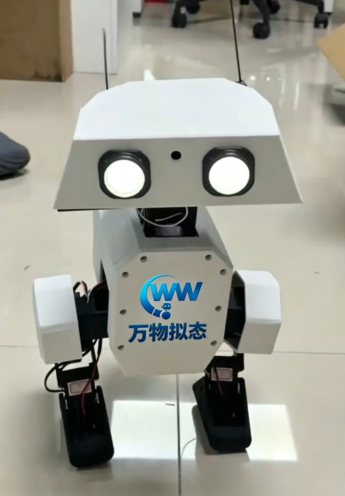
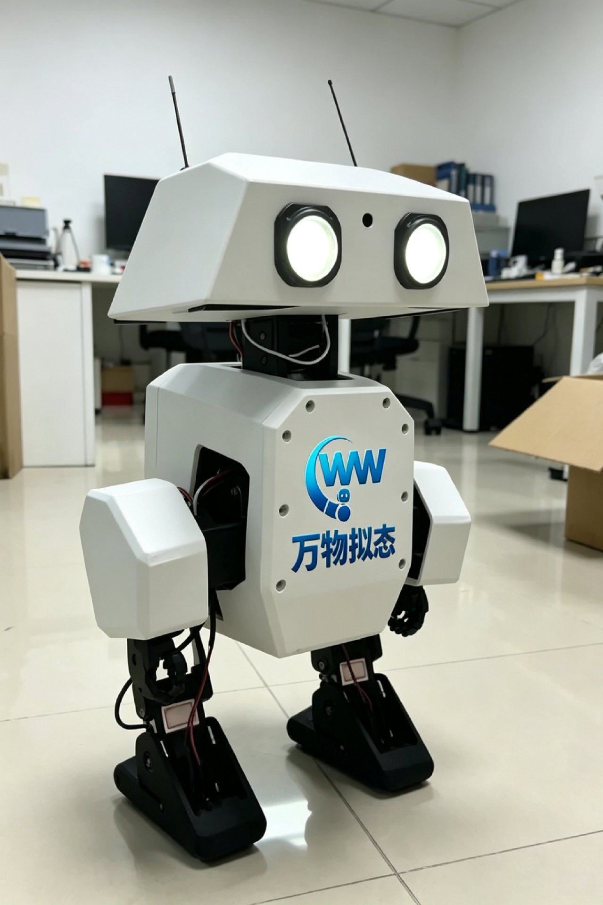
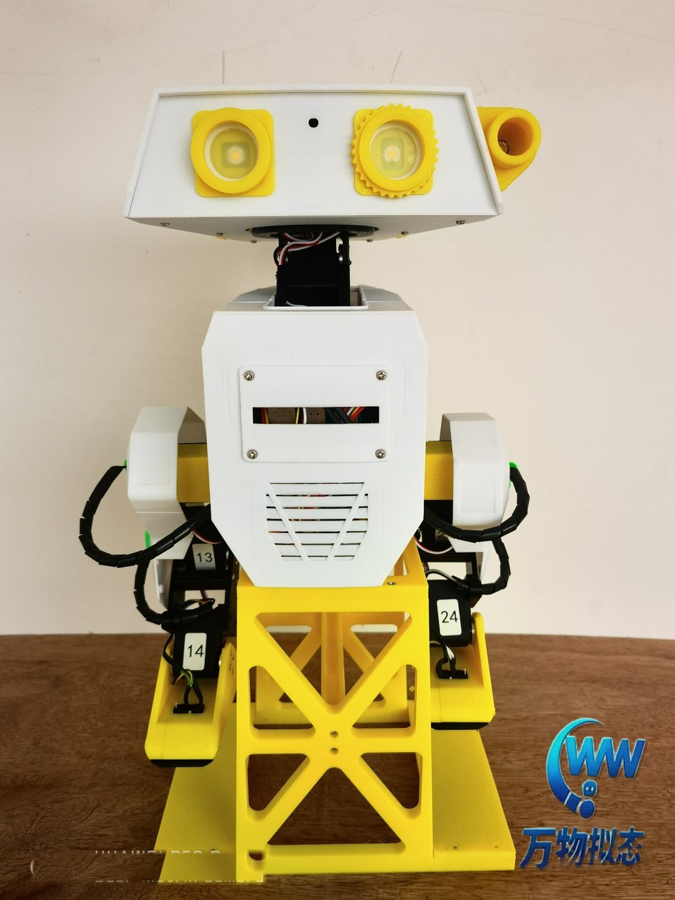
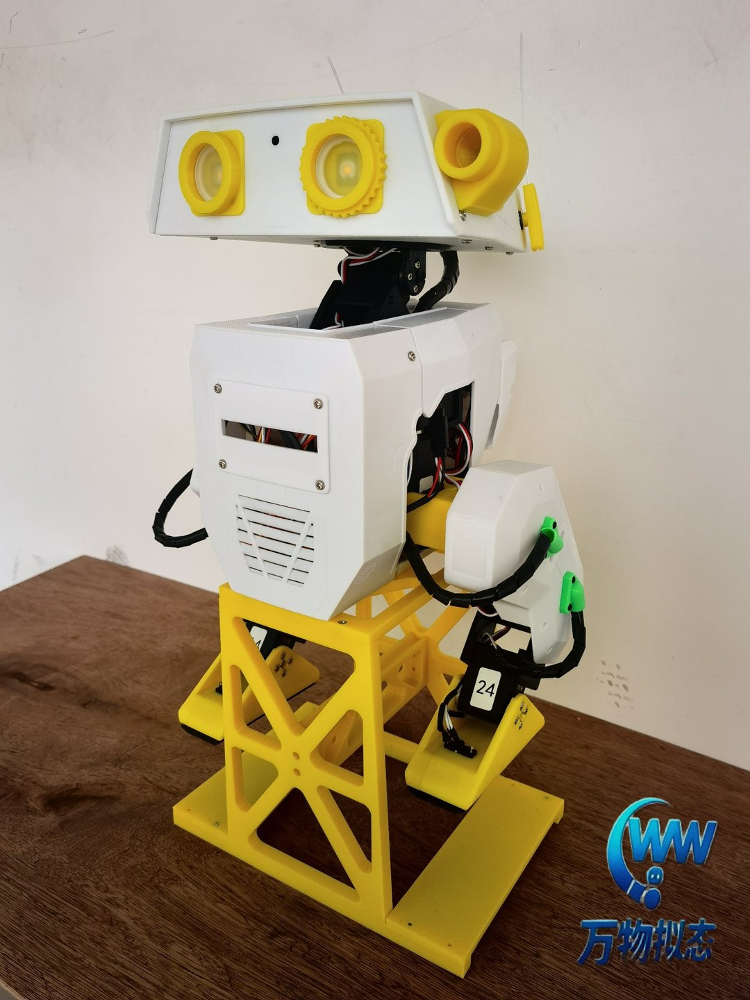
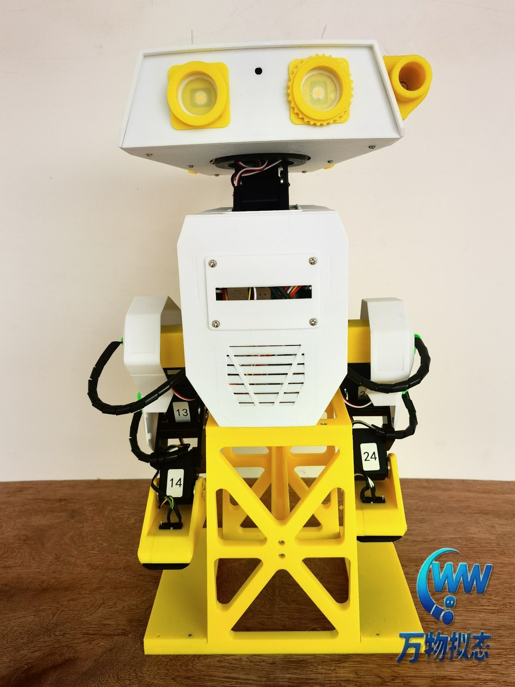
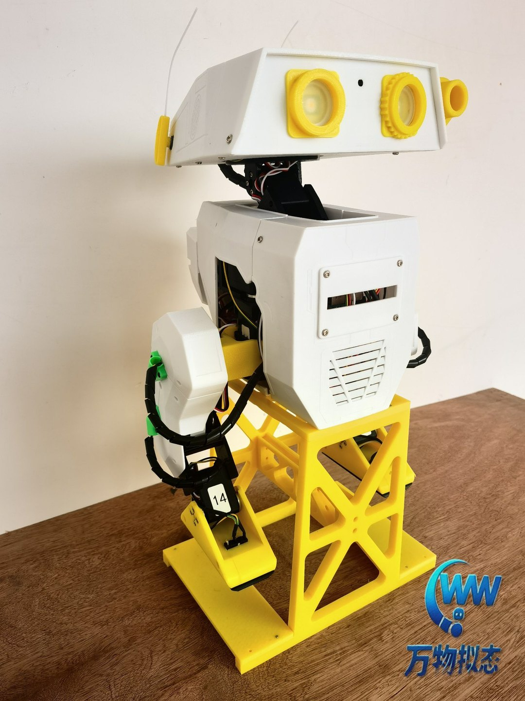
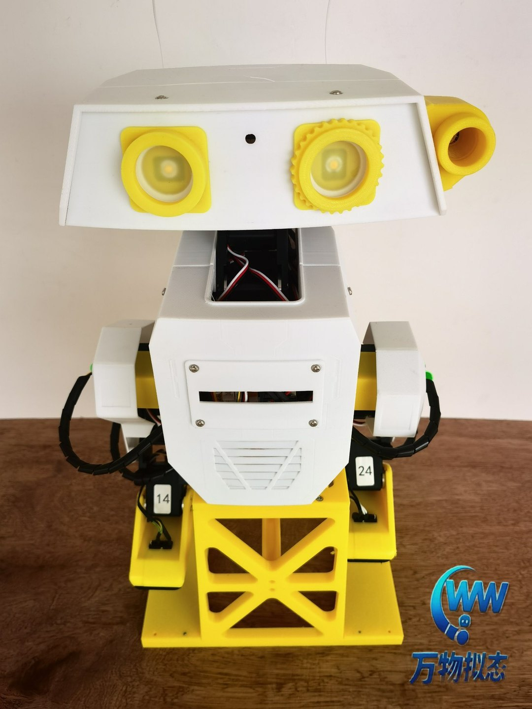

v2 · 复刻迪士尼 BDX 的开源双足仿生机器人
约 42cm 的可爱双足机器人，14+2 自由度全身关节，树莓派强化学习驱动行走。35+ 件 3D 打印结构全部开源——外观、配色、功能，全部由你定义。







从外壳颜色到控制算法，从教学课件到科研实验，OpenDuck Mini 的每一层都向开发者开放
35+ 件 3D 打印结构件（PLA/TPU），配色、涂装、外壳造型均可定制，打造独一无二的校园 IP 机器人形象。
机械 CAD、BOM 物料、板载软件、仿真环境、强化学习策略全部开源（Apache-2.0），商用无忧。
预留摄像头、麦克风、LED 表情与投影接口，可加装传感器与语音交互，满足科研与教学场景扩展。
MuJoCo 仿真 + 强化学习行走策略开箱即用，支持模仿学习训练自己的步态，Sim2Real 全流程打通。
OpenDuck Mini v2 核心参数一览
| 外形高度 | 约 42 cm（腿部伸直） |
| 机器人构型 | 双足仿生机器人（灵感源于迪士尼 BDX） |
| 驱动系统 | 14× Feetech STS3215 总线舵机 + 2× SG90 微型舵机（触角） |
| 关节布局 | 每腿 5 自由度（髋偏航/滚转/俯仰、膝、踝）；头部俯仰/偏航/滚转 + 颈部俯仰；触角 ×2 |
| 主控制器 | Raspberry Pi Zero 2W（4×Cortex-A53 @1GHz，512MB RAM） |
| 传感器 | BNO055 九轴 IMU、足部接触开关、摄像头、麦克风 |
| 电源 | 2S 18650 锂电池组（约 7.4V）带 BMS 保护 |
| 音频 / 显示 | MAX98357A I2S 功放 + 扬声器；双眼 LED + 投影表情 |
| 机械结构 | 35+ 件 3D 打印件（PLA 结构件 / TPU 柔性件），M3 热熔螺母与轴承 |
| 控制方式 | Xbox 手柄（蓝牙）遥控，支持启停 / 加速 / 触角 / 随机音效 |
| 开源许可 | Apache-2.0（含商用） |
机械 · 驱动 · 感知 · 算力 · 软件，每一层都开放可改
PLA 结构件 + TPU 柔性脚底，Onshape 完整 CAD 模型开放，打印参数一键复用
14 路串行总线舵机 + 2 路 PWM 触角，关节软偏移标定工具，电机参数可辨识
BNO055 九轴 IMU 姿态感知，足部接触开关，摄像头与麦克风表情交互扩展
树莓派 Zero 2W 运行 ONNX 强化学习策略，GPIO 直控 LED / 投影 / 触角 / 足部开关
板载 Python Runtime + MuJoCo 仿真 + RL 训练管线，duck_config.json 灵活配置
内置 URDF 模型与 Playground 环境，从 Onshape 设计到仿真的转换文档齐全，仿真零门槛。
仓库内置 ONNX 格式强化学习策略（BEST_WALK_ONNX），到手即可驱动行走，无需自行训练。
提供参考动作生成流程与训练文档，配合 BAM 电机辨识提升仿真到真机的迁移效果。
Xbox 蓝牙手柄遥控：启停、随机音效、触角控制、加速行走，演示与交互场景随手就来。
# OpenDuck Mini Runtime
from runtime import Duck
duck = Duck(config='duck_config.json')
duck.calibrate() # 关节软偏移标定
duck.load_policy('BEST_WALK_ONNX.onnx')
duck.walk() # 强化学习步态
duck.blink_eyes(2) # 表情交互 ✨万物拟态提供从整机交付到联合研发的完整定制服务体系
全装配整机交付，含预训练行走策略，开箱即可遥控行走，适合课程演示与兴趣体验。
融入学校 Logo、吉祥物、校庆元素的外壳定制，打造校园专属的 AI 形象大使。
面向高校实验室与科研团队的联合研发，从硬件到算法按需深度定制。
覆盖机器人学、运动控制、嵌入式、强化学习的全链条实训载体，理论到真机一以贯之。
低成本双足平台，适合步态控制、Sim2Real、模仿学习等方向的快速迭代验证。
从零组装到二次开发，开源 BOM 与装配指南，培养动手能力与工程思维。
校园科技节、开放日、迎新典礼的互动明星，定制外观让机器人成为校园 IP。
课程目标、知识图谱、学习路径与考核方式总览。
配置开发环境、SSH 远程连接与文件同步工具链。
从传统 AI 到具身智能：感知、决策与执行的闭环。
分层控制架构：高层任务规划、中层运动控制、底层伺服驱动。
基于模型控制与基于学习控制的对比、适用场景与演进趋势。
质心、支撑多边形与静态稳定性的几何关系。
线性倒立摆模型与捕捉点的物理意义及计算。
单双脚支撑切换、重心轨迹规划与稳定判据。
DH 参数建模、正运动学求解与逆运动学数值解法。
足端轨迹规划：离地、摆动、触地阶段的约束与插值。
结合质心速度与位置，求解摆动脚触地点的预测方法。
从状态机到步态周期：双足行走完整控制流程拆解。
参数整定、在线调试与真机步态验证的工程实践。
MuJoCo 物理引擎特性、URDF/MJCF 模型与接触模型。
在 Linux/树莓派上安装 MuJoCo、绑定 Python 与依赖。
加载 OpenDuck Mini 模型、运行第一个仿真步并可视化。